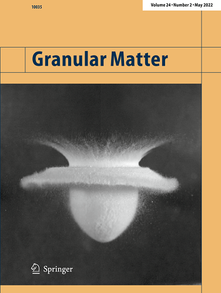

Research


Fluctuations and Dynamics of Passive Particles in Confined Bacterial Suspensions
My research focuses on understanding the dynamics of passive particles immersed in active bacterial baths, particularly in spherical confinement. By combining experimental techniques and theoretical modeling, I aim to extract the properties of the bacterial bath and its effect on tracer motion, with implications for both fundamental physics and practical applications in soft matter and biophysics.

Geometrical Description of Impact Cratering Under Microgravity Conditions
This study presents a novel experimental setup for analyzing impact cratering in granular media under microgravity conditions. The research investigates how different projectile shapes (spheres, cones, pyramids, cubes) influence both the surface and subsurface dynamics of crater formation. The findings reveal that the geometry of the projectile significantly affects the crater shape and energy dissipation, providing new insights into planetary formation processes, particularly in protoplanetary disks. This paper was selected as the cover of the journal Granular Matter in May 2022.
Cover of Granular Matter, May 2022